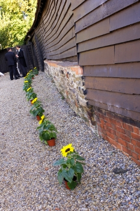

Environmental
With a background in Ecology and Sustainable Development, Sophie composts all flower waste, recycles packaging and uses reusable and recyclable materials in her work as much as possible.
Although currently a small proportion of the market, it is possible to source organic and Fair Trade Flowers and foliage. Furthermore, suppliers are starting to make improvements in energy efficiency, reducing chemical use in production, and growing local and seasonal flowers. Sophie would be happy to help you source flowers more sustainably for your wedding and to discuss any other options, such as incorporating potted flower arrangements and living flowers to be enjoyed by guests long after your wedding day.
Seasonal
Some flowers, like roses, lilies, orchids and gerberas are readily available all year round. Others tend to be more seasonal. Although it is possible to buy flowers out of season, quality can vary and it can be expensive. Flowers in season are in their prime and are more likely to be grown locally and less intensively.
Spring
New life and a fresh start defines Spring - what a better way to start your married life! Spring flowers include daffodils, freesias, hyacinths, ranunculus, tulips and lily of the valley.
Summer
Hot sun and heady fragrances may remind you of your summertime wedding. Flowers include delphiniums, hydrangeas, open roses, peonies and stock.
Autumn
Romantic sunsets and Autumnal colours could provide the perfect backdrop for your wedding. Flowers include sunflowers, lisianthus, nerines, gladiolus, autumn leaves and berries.
Winter
Sparkling snowy whites and rich deep colours might add the glamour for a festive wedding. Winter flowers include agapanthus, anemones, orchids, buds and berries, holly, fir and twinkling twigs.